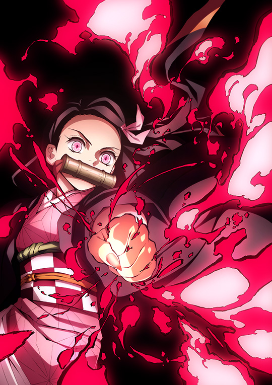

Kimetsu no Yaiba
Plot
In Taishō-era Japan, Tanjiro Kamado is a kind-hearted and intelligent boy who lives with his family in the mountains. He has become his family’s sole source of income after the passing of his father, making trips to the nearby village to sell charcoal. Everything changes when he comes home one day to discover that his family has been attacked and slaughtered by a demon. Tanjiro and his sister Nezuko are the sole survivors of the incident, with Nezuko being transformed into a demon, but still surprisingly showing signs of human emotion and thought. After an encounter with Giyū Tomioka, a demon slayer, Tanjiro is recruited by Giyū to also become a demon slayer and begins his quest to help his sister turn human again and avenge the deaths of the rest of his family.
Character

Tanjiro Kamado |

Nezuko Kamado |

Zenitsu Agatsuma |

Inosuke Hashibira |

Giyu Tomioka |

Shinobu Kocho |